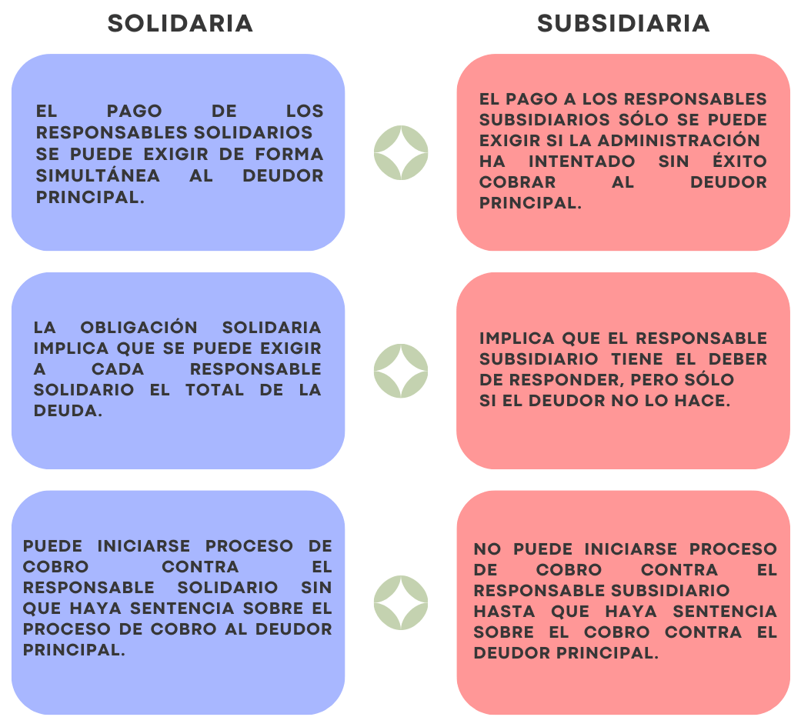

El empresario concurrente tendrá diversos tipos de responsabilidades en materia fiscal, laboral y prevención de riesgos laborales (consultar unidad de trabajo 9). La tipificación del grado de infracciones y sanciones aparece en el RDL 5/2000 (LISOS). A menudo se mezclan los conceptos de responsabilidad solidaria y subsidiaria, por ello va a ser el primer punto a definir.
Responsabilidad solidaria: Es aquella en que la empresa principal responde conjuntamente con el contratista o subcontratista, según el caso, respecto de las deudas laborales y previsionales que tengan éstos con sus trabajadores.
Responsabilidad subsidiaria: Es aquella en que la empresa principal debe responder cuando el contratista o subcontratista, según el caso, no cumple con sus obligaciones laborales y previsionales respecto de sus trabajadores.

Elaboración propia. Responsabilidad solidaria y subsidiaria
Responsabilidades e infracciones
Según el art. 42.1 LPRL, el incumplimiento por los empresarios de sus obligaciones en materia de coordinación de actividades empresariales dará lugar a las responsabilidades administrativas, así como, en su caso, a responsabilidades penales y a las civiles por los daños y perjuicios que puedan derivarse. En el art.42 LISOS se detallan las responsabilidades empresariales en materia laboral y de prevención de riesgos laborales y marco sancionador.
13. No adoptar los empresarios y los trabajadores por cuenta propia que desarrollen actividades en un mismo centro de trabajo, o los empresarios a que se refiere el artículo 24.4 de la Ley de Prevención de Riesgos Laborales, las medidas de cooperación y coordinación necesarias para la protección y prevención de riesgos laborales.
14. No adoptar el empresario titular del centro de trabajo las medidas necesarias para garantizar que aquellos otros que desarrollen actividades en el mismo reciban la información y las instrucciones adecuadas sobre los riesgos existentes y las medidas de protección, prevención y emergencia, en la forma y con el contenido establecidos en la normativa de prevención de riesgos laborales.
15.b) La falta de presencia de los recursos preventivos cuando ello sea preceptivo o el incumplimiento de las obligaciones derivadas de su presencia.
7. No adoptar los empresarios y los trabajadores por cuenta propia que desarrollen actividades en un mismo centro de trabajo, las medidas de cooperación y coordinación necesarias para la protección y prevención de riesgos laborales consideradas como peligrosas con riesgos especiales.
8.a) No adoptar el promotor o el empresario titular del centro de trabajo las medidas necesarias para garantizar que aquellos otros que desarrollen actividades en el mismo reciban la información y las instrucciones adecuadas sobre los riesgos existentes y las medidas de protección, prevención y emergencia de las actividades consideradas como peligrosas con riesgos especiales.
8.b) La falta de presencia de los recursos preventivos cuando ello sea preceptivo o el incumplimiento de las obligaciones derivadas de su presencia, cuando se trate de actividades reglamentariamente consideradas como peligrosas o con riesgos especiales.